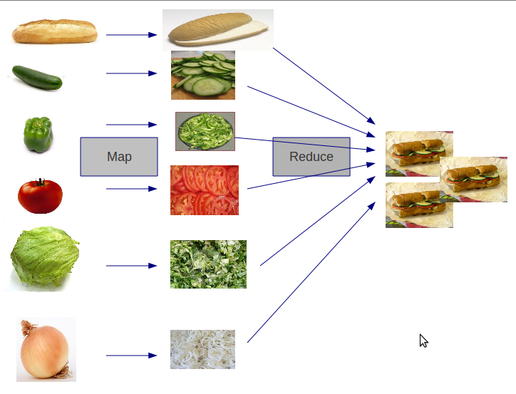

Erick Camacho @ecamacho
#OctoberTalks17
¿Quién Soy?
- Google Developer Expert
- Coorganizador NSCoder
- Mobile Engineering Manager en Incode
¿Por qué estamos aquí?
The free lunch is over:
A Fundamental Turn Toward Concurrency in Software.
Herb Sutter Marzo 2005
"Aproximadamente cada dos años se duplica el número de transistores en un microprocesador."
Gordon Moore 1965

Las aplicaciones necesitarán ser concurrentes si quieren beneficiarse de las mejoras en los procesadores.
Herb Sutter Marzo 2005
¿Por qué Elixir?
Erlang / OTP
- Creado en 1986
- Sistemas distribuidos y concurrentes
- Tolerancia a fallos
- Alta disponibilidad
Elixir
- José Valim ~2012
- Funcional
- Concurrente
- Productivo
Empecemos
Instala elixir
iex - el shell de Elixir
iex
IO.puts("Hola, OctoberTalks!")
Tipos de datos
- Enteros
- Flotantes
- Strings
- Átomos
Colecciones
Listas
Tuplas
Mapas
Keyword Lists
Funciones anónimas
iex> suma = fn(a, b) -> a + b end
iex> suma.(1,2)
iex> resta = &(&1 - &2)
iex> resta.(10,2)
Hagamos un proyecto
mix new october_talks
Módulos y funciones nombradas
defmodule OctoberTalks do
def es_par?(n) do
false
end
end
Pruebas unitarias con ExUnit
defmodule OctoberTalksTest do
use ExUnit.Case
doctest OctoberTalks
test "el 2 es par" do
assert OctoberTalks.es_par?(2) == true
end
test "el 301 no es par" do
assert OctoberTalks.es_par?(3) == false
end
end
Guardias
defp par?(n) when rem(n, 2) == 0 do
true
end
defp par?(n) do
false
end
Operaciones con colecciones
def solo_pares_ordenados(lista) do
lista
end
test "solo 200 y 1004 son pares" do
assert OctoberTalks.solo_pares([3, 903, 1004, 9999, 200]) == [200, 1004]
end
El operador Pipe
def solo_pares_ordenados(lista) do
lista
|> Enum.filter( fn(n) -> es_par?(n) end)
|> Enum.sort
end
Un caso real
Descarga este dataset
Trabajando con archivos
def open_teams_file do
result = File.open("data/noexiste.csv")
result
end
Pattern matching
def open_teams_file do
case File.open("data/team.csv") do
{:error, _} -> :no_existe
{:ok, _} -> :existe
end
end
Ahora queremos un Mapa con los equipos y su identificador
- La clave será el id del equipo
- El valor será el nombre del equipo
- Recorrer línea a línea el archivo
- Descartar la primera línea
- Dividir los valores por comas
- Tomar sólo el id y el nombre del equipo
- Devolver un Mapa
Map - Reduce

def get_teams do
File.stream!("data/team.csv")
|> Stream.drop(1)
|> Stream.map(fn(linea) -> String.split(linea, ",") end)
|> Enum.reduce(Map.new, fn(values, map) -> add_team_to_map(map, values) end)
end
defp add_team_to_map(map, values) do
Map.put(map, Enum.at(values, 1), String.replace(Enum.at(values, 3), "\"",""))
end
test "Podemos encontrar a Juventus" do
assert Map.get(OctoberTalks.Futbol.get_teams, "9885") == "Juventus"
end